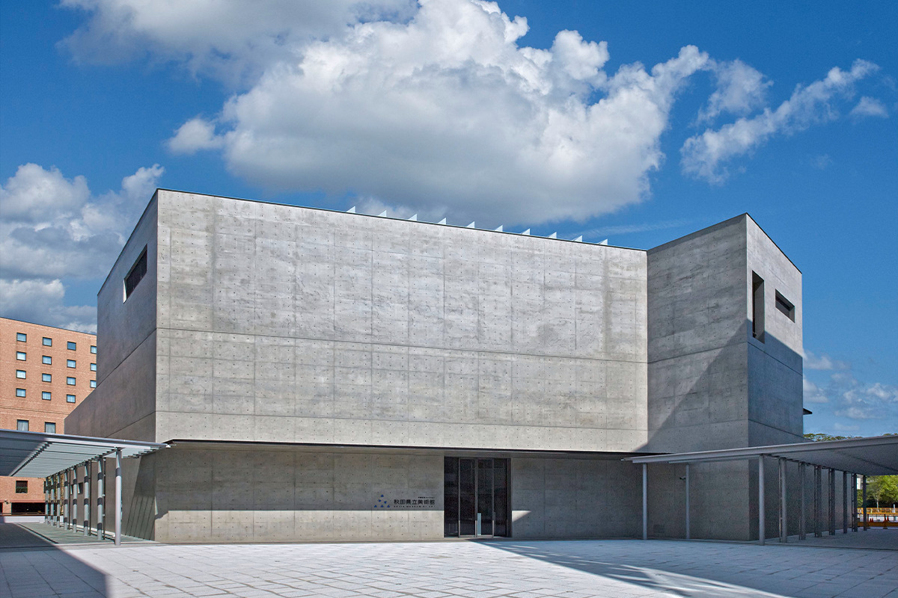
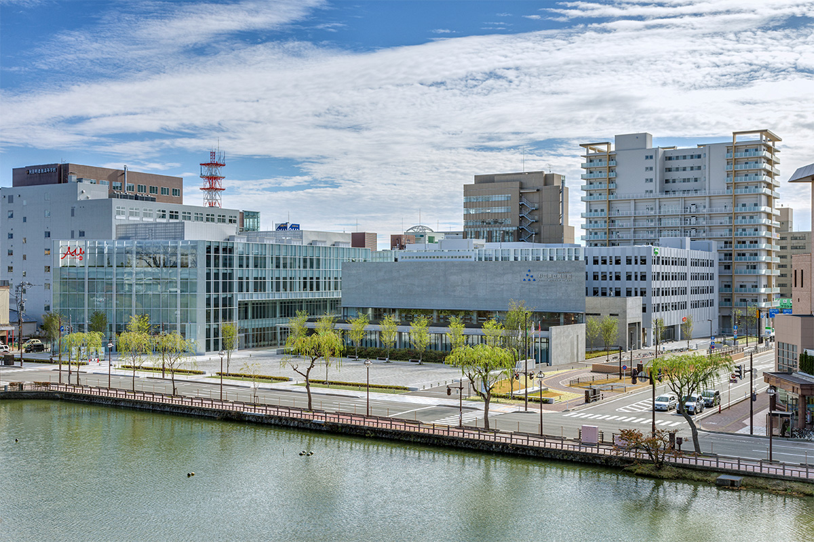
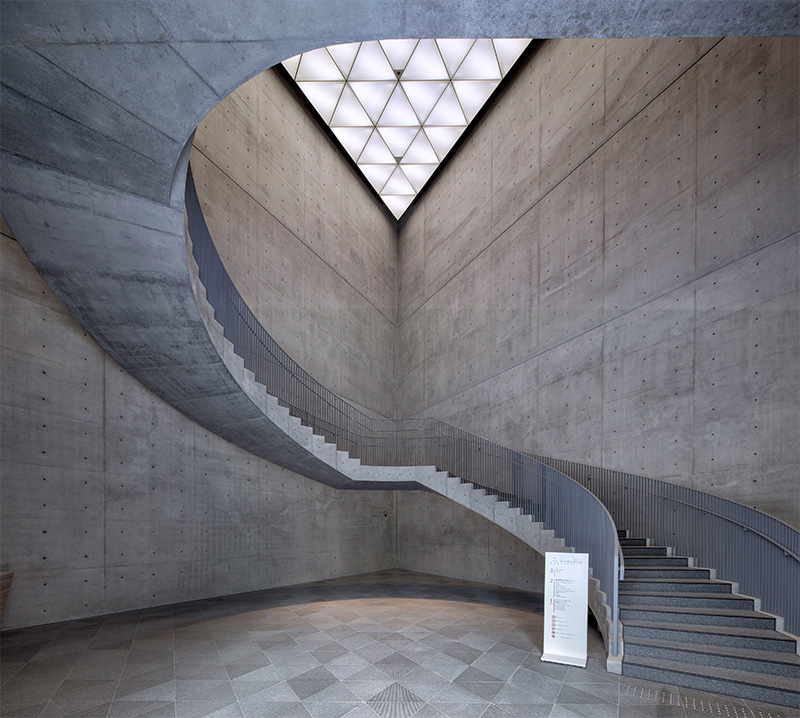
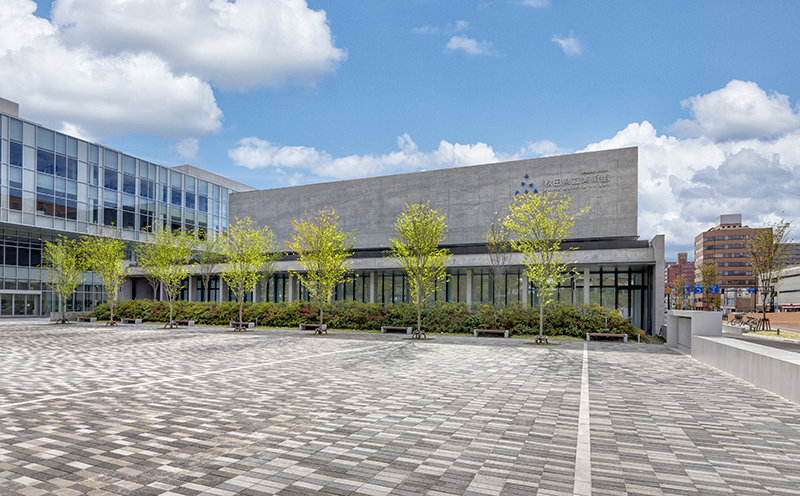
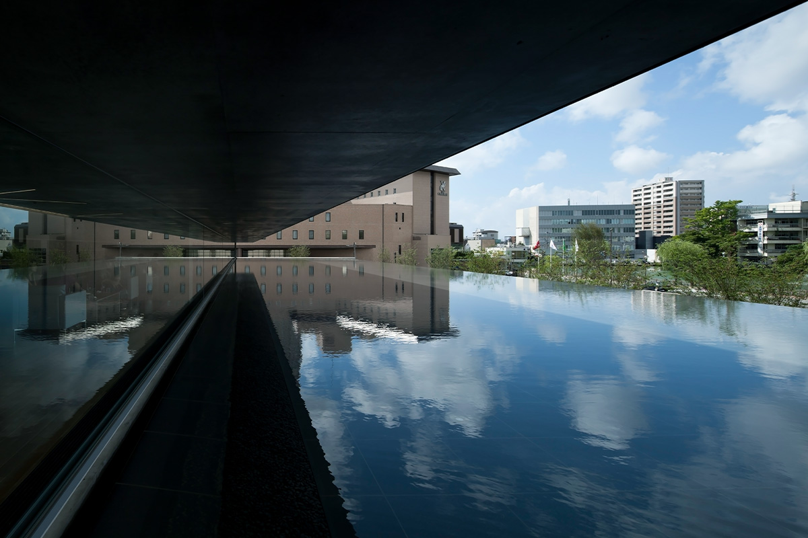
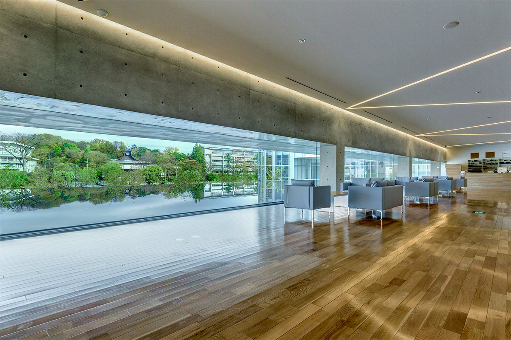
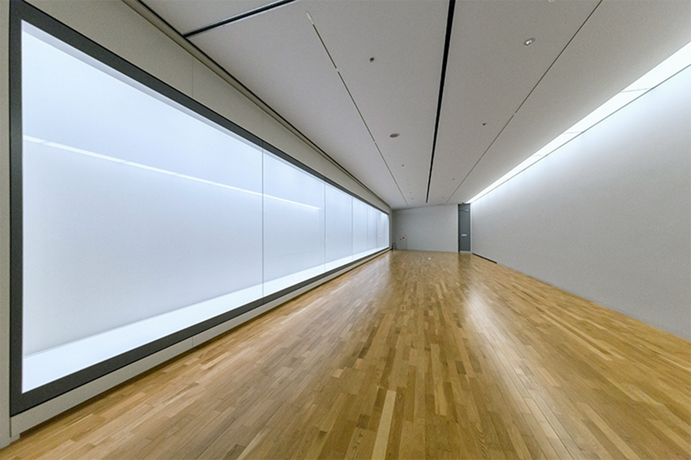
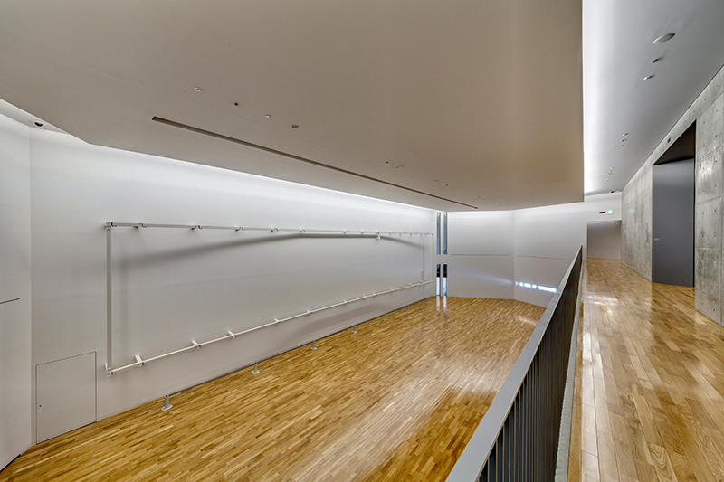
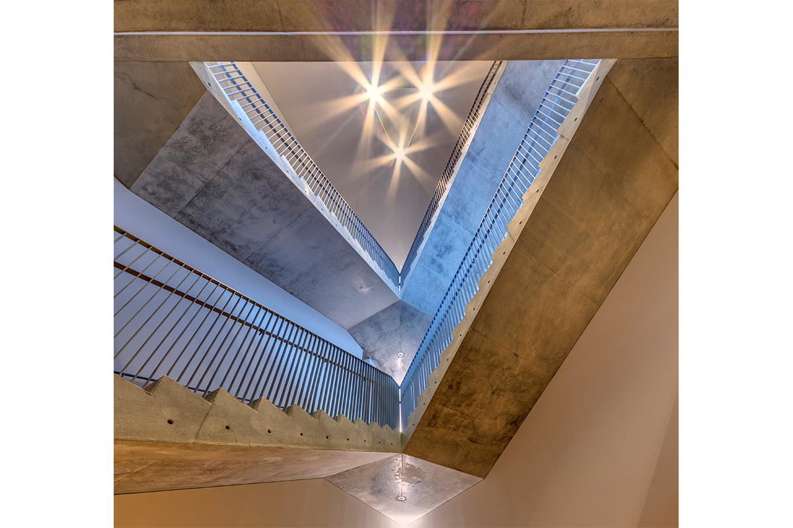
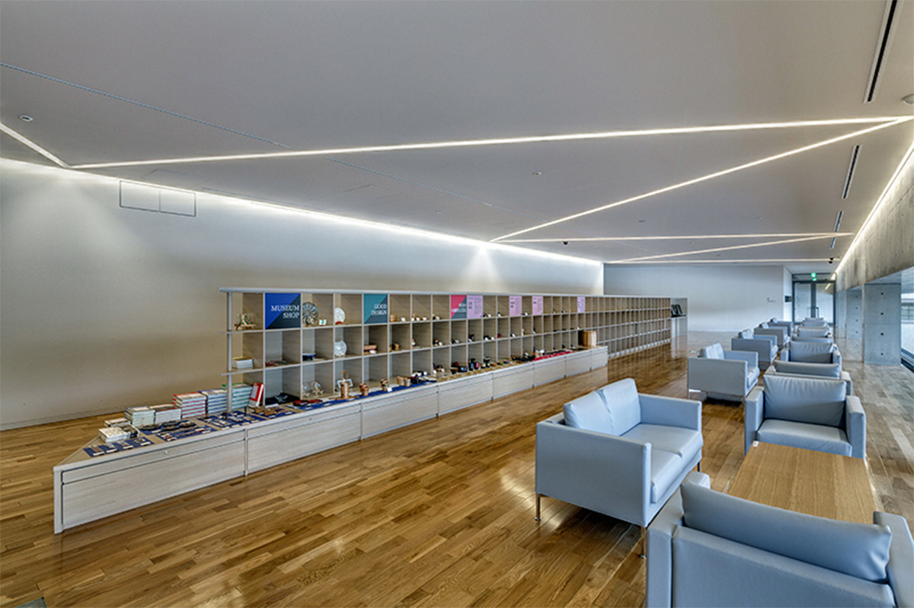

Префектура Акита · Акита · искусство и архитектура
Художественный музей префектуры Акита: Фудзита, бетон Тадао Андо и вид на парк через водный сад

В десяти минутах ходьбы от станции Акита стоит музей, ради которого стоит выйти из поезда. Здесь хранится огромное полотно Цугухару Фудзиты о жизни Акиты, а само здание построил Тадао Андо, и вид из его окон не уступает картинам.
История
Коллекционер и художник

Парк Сэнсю разбит на месте замка Кубота, резиденции князей Акиты, чьё владение оценивалось в 200 000 коку риса. Город внёс его в список охраняемых живописных мест, и в любое время года здесь красиво. Напротив парка находится «Эриа Накаити», квартал из четырёх зданий и площади, а в нём и Художественный музей префектуры Акита.
Музей открылся в 1967 году, чтобы показывать собрание Масакити Хирано, одного из самых богатых людей префектуры. В 2013 году он переехал из старого здания в новое и открылся заново. В постоянной экспозиции работы Цугухару Фудзиты 1930-х годов, начиная с полотна «События Акиты» (1937), а кроме них музей устраивает тематические и специальные выставки, основанные на собственных исследованиях.
Масакити Хирано (1895–1989) родился в купеческом квартале Акиты в богатой семье торговцев рисом и стал её третьим главой. С юности он увлекался гравюрами укиё-э, антиквариатом и живописью эпохи Эдо и всю жизнь собирал искусство. Впервые работы Фудзиты он увидел в 1929 году на выставке, которую художник устроил, ненадолго приехав в Японию. Через пять лет они познакомились лично на выставке объединения «Ника» в Токио.
В 1936 году внезапно умерла жена Фудзиты, Мадлен, и Хирано задумал построить музей в её память. Он купил много больших работ художника, и Фудзита начал писать для него настенную картину. Но шла война, и строительство музея отменили.
Только через тридцать лет, в 1967 году, Хирано основал фонд «Художественный музей Масакити Хирано», чтобы показать людям всё, что собрал за долгие годы. Он хотел, чтобы искусство помогало молодым людям вырасти душевно богатыми. В мае того же года открылся префектуральный музей с его коллекцией. Её ядро, работы Фудзиты, хорошо известно как собрание, по которому можно проследить весь путь художника в 1930-е годы.
Архитектура
Музей, какого больше нигде нет

Новое здание спроектировал Тадао Андо. Архитектор учился самостоятельно, получил Притцкеровскую премию, японский орден Культуры и множество других наград, и его работы ценят и в Японии, и за рубежом. Главное в музее это коллекция с полотном «События Акиты» шириной больше 20 метров. Андо воспользовался и тем, что участок смотрит на парк Сэнсю в центре города: идея проекта звучала как «музей, привлекательный так, как может быть только здесь».
Старое здание префектурального музея с треугольной крышей жители Акиты давно считают частью города. Новое отвечает ему: треугольник стал главным мотивом всего проекта.
В музее много мест, ради которых стоит задержаться: винтовая лестница без колонн и без опоры на стену, просторный лаунж с видом на парк Сэнсю через водный сад и входной зал с огромным треугольным пространством до самой крыши, который связывает музей с городом. Смотреть здесь можно не только на картины: облик здания меняется с часом дня и временем года.

Внутри
Водный сад, лаунж и «События Акиты»
Самое неожиданное в музее это водный сад. Сквозь большие стеклянные окна он смотрится как экран в кинотеатре, и картина на нём меняется вместе с сезоном.

Из лаунжа видно, как за водой стоит старое здание музея с треугольной крышей, а за ним парк Сэнсю. Времена года в парке смотрятся отсюда как огромная настенная картина. Можно сесть на диван, взять кофе или пирожное и не спешить.


Ради «Событий Акиты» в музей едут прежде всего. На огромном полотне Фудзита изобразил промыслы и историю Акиты, и для жителей префектуры оно сокровище. В здании Андо картина смотрится ещё сильнее.

Даже лестничные клетки здесь треугольные: свет от светодиодных ламп ложится на пол треугольником.

Напоследок стоит зайти в музейный магазин с кафе. Здесь продают традиционные ремёсла Акиты: изделия из вишнёвой коры «кабадзайку», гнутые коробки магэваппа и лакированную посуду Кавацура. В кафе подают именно в посуде Кавацура.

Вид на парк Сэнсю, архитектура и живопись вместе передают в этом музее давнюю традицию красоты, которой гордится Акита.
Художественный музей префектуры Акита
- Адрес
- префектура Акита, Акита, Накадори, 1-4-2
- Телефон
- +81 18-853-8686
- Часы работы
- 10:00–18:00 (вход до 17:30)
- Выходные
- нерегулярные
- Цены / Вход
- зависит от выставки
- Как добраться
- 10 минут пешком от станции JR Акита